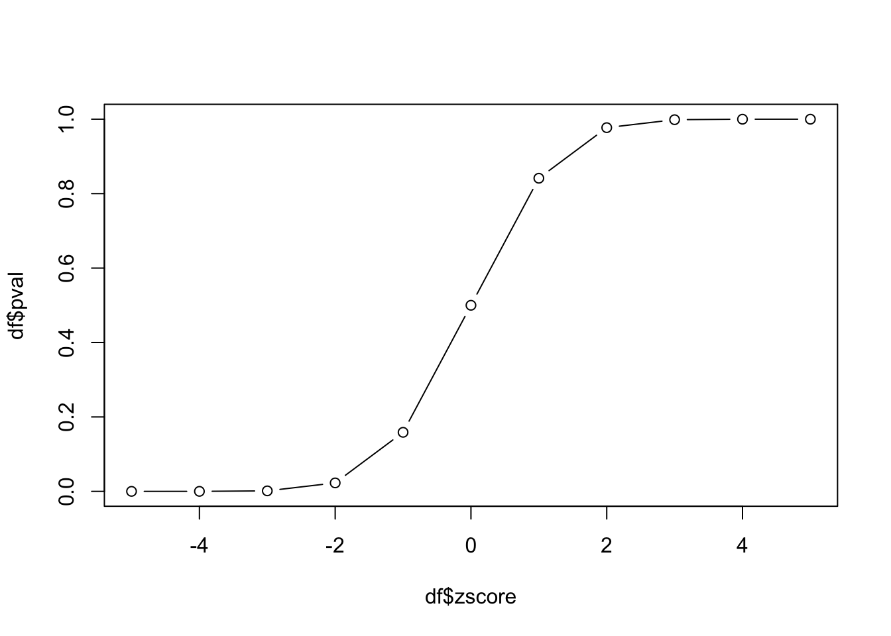
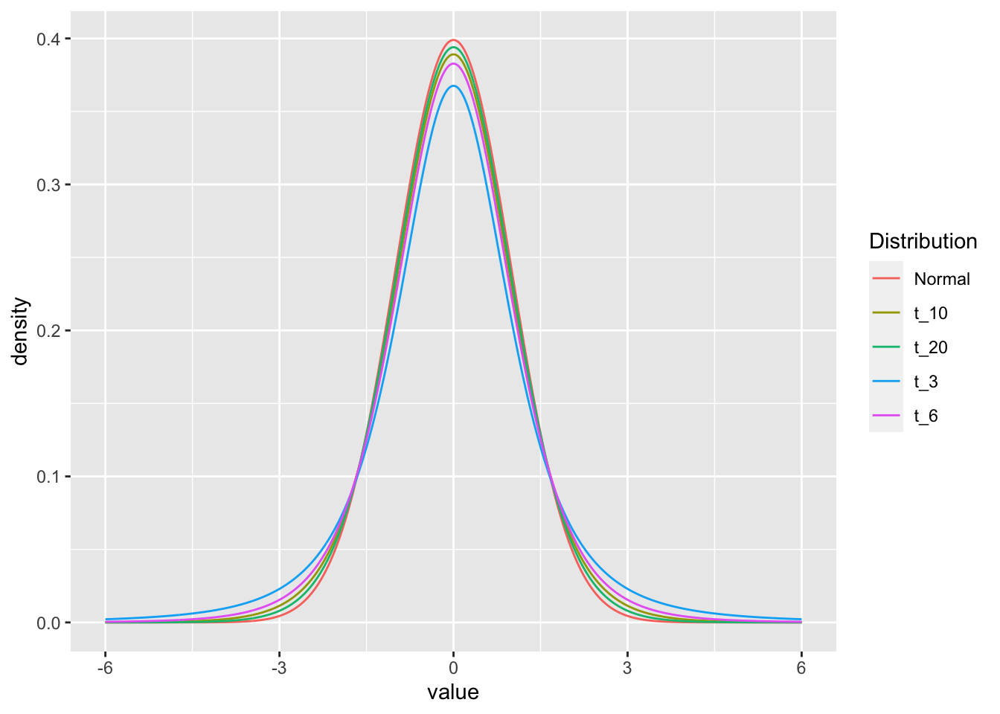
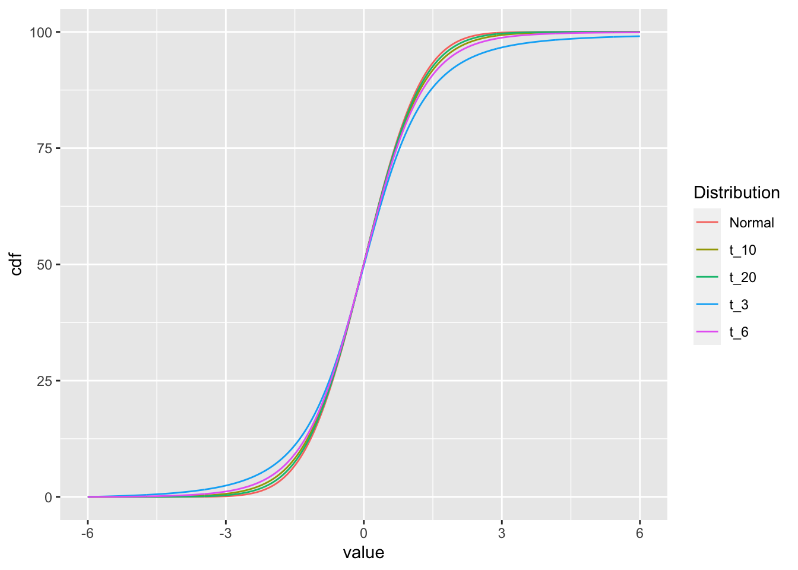
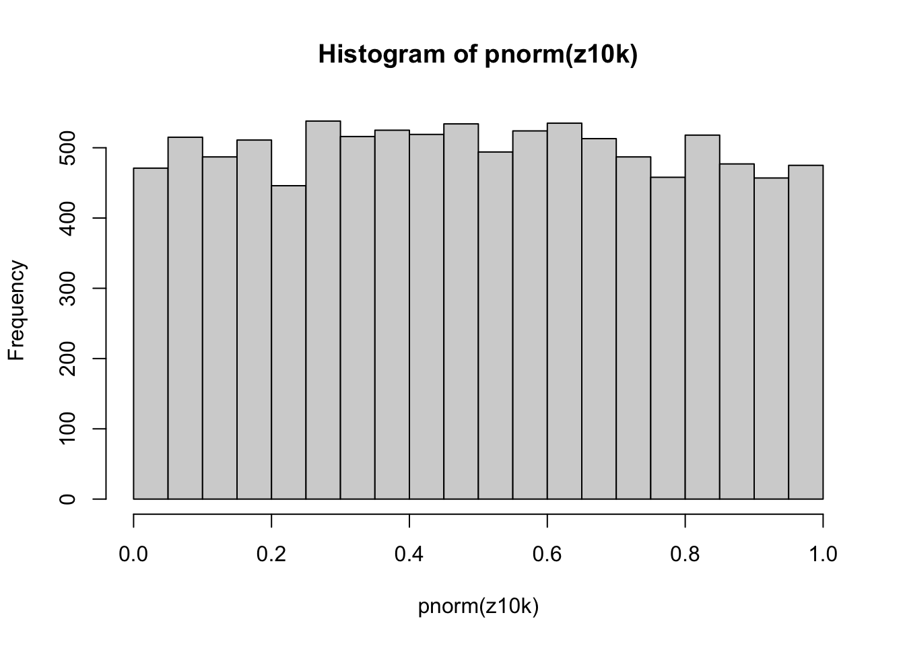
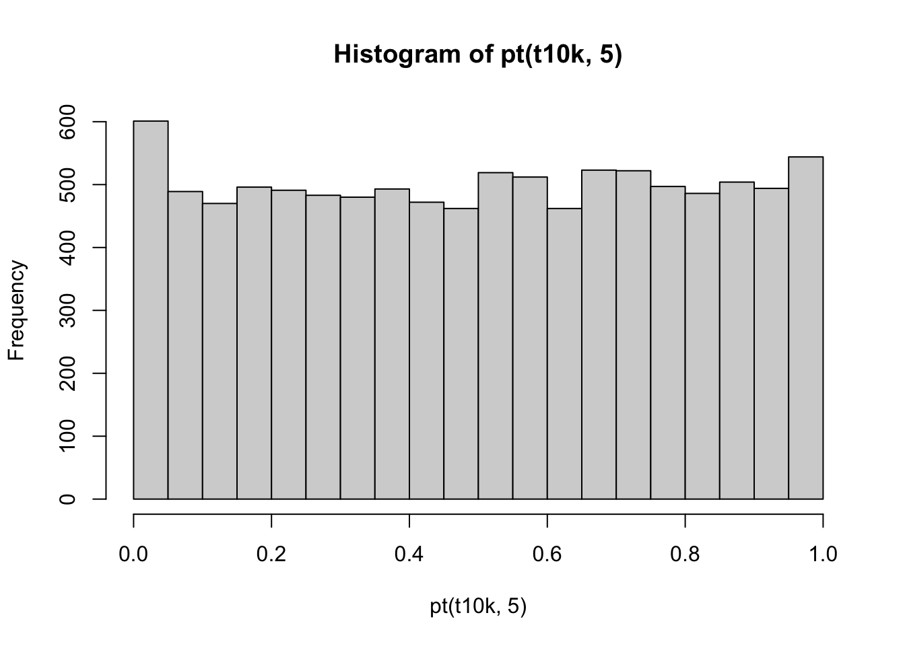
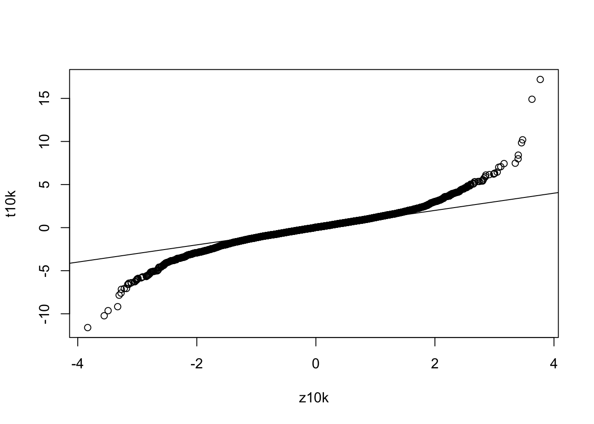

T-statistics and T-testing
Sean Davis
2022-07-02
Background
The t-test is a statistical hypothesis test that is commonly used when the data are normally distributed (follow a normal distribution) if the value of the population standard deviation were known. When the population standard deviation is not known and is replaced by an estimate based no the data, the test statistic follows a Student’s t distribution.
T-tests are handy hypothesis tests in statistics when you want to compare means. You can compare a sample mean to a hypothesized or target value using a one-sample t-test. You can compare the means of two groups with a two-sample t-test. If you have two groups with paired observations (e.g., before and after measurements), use the paired t-test.
A t-test looks at the t-statistic, the t-distribution values, and the degrees of freedom to determine the statistical significance. To conduct a test with three or more means, we would use an analysis of variance.
The distriubution that the t-statistic follows was described in a famous paper by “Student”, a pseudonym for William Sealy Gosset, published in 1908 in Biometrica1.
The Z-score and probability
Before talking about the t-distribution and t-scores, lets review the Z-score, its relation to the normal distribution, and probability.
The Z-score is defined as:
\[Z = \frac{x - \mu}{\sigma}\] where \(\mu\) is a the population mean from which \(x\) is drawn and \(\sigma\) is the population standard deviation (taken as known, not estimated from the data).
The probability of observing a \(Z\) score of \(z\) or greater can be calculated by \(pnorm(z,\mu,\sigma)\).
For example, let’s assume that our “population” is known and it truly has a mean 0 and standard deviation 1. If we have observations drawn from that population, we can assign a probability of seeing that observation by random chance under the assumption that the null hypothesis is TRUE.
zscore = seq(-5,5,1)For each value of zscore, let’s calculate the p-value and put the
results in a data.frame.
df = data.frame(
zscore = zscore,
pval = pnorm(zscore, 0, 1)
)
df## zscore pval
## 1 -5 2.866516e-07
## 2 -4 3.167124e-05
## 3 -3 1.349898e-03
## 4 -2 2.275013e-02
## 5 -1 1.586553e-01
## 6 0 5.000000e-01
## 7 1 8.413447e-01
## 8 2 9.772499e-01
## 9 3 9.986501e-01
## 10 4 9.999683e-01
## 11 5 9.999997e-01Why is the p-value of something 5 population standard deviations away
from the mean (zscore=5) nearly 1 in this calculation? What is the
default for pnorm with respect to being one-sided or
two-sided?
Let’s plot the values of probability vs z-score:
plot(df$zscore, df$pval, type='b')
This plot is the empirical cumulative density function (cdf) for our data. How can we use it? If we know the z-score, we can look up the probability of observing that value. Since we have constructed our experiment to follow the standard normal distribution, this cdf also represents the cdf of the standard normal distribution.
Small diversion: two-sided pnorm function
The pnorm function returns the “one-sided” probability
of having a value at least as extreme as the observed \(x\) and uses the “lower” tail by default.
Let’s create a function that computes two-sided p-values.
- Take the absolute value of x
- Compute
pnormwithlower.tail=FALSEso we get lower p-values with larger values of \(x\). - Since we want to include both tails, we need to multiply the area (probability) returned by pnorm by 2.
twosidedpnorm = function(x,mu=0,sd=1) {
2*pnorm(x,mu,sd,lower.tail=FALSE)
}And we can test this to see how likely it is to be 2 or 3 standard deviations from the mean:
twosidedpnorm(2)## [1] 0.04550026twosidedpnorm(3)## [1] 0.002699796The t-distribution
We spent time above working with z-scores and probability. An important aspect of working with the normal distribution is that we MUST assume that we know the standard deviation. Remember that the Z-score is defined as:
\[Z = \frac{x - \mu}{\sigma}\] The formula for the population standard deviation is:
\[\sigma = \sqrt{\frac{1}{N}\sum_{i=1}^{N}({xi - \mu)^2}}\] In general, the population standard deviation is taken as “known” as we did above.
If we do not but only have a sample from the population, instead of using the Z-score, we use the t-score defined as:
\[t = \frac{x - \bar{x}}{s}\] This looks quite similar to the formula for Z-score, but here we have to estimate the standard deviation, \(s\) from the data. The formula for \(s\) is:
\[s = \sqrt{\frac{1}{N-1}\sum_{i=1}^{N}({x_{i} - \bar{x})^2}}\] Since we are estimating the standard deviation from the data, this leads to extra variability that shows up as “fatter tails” for smaller sample sizes than for larger sample sizes. We can see this by comparing the t-distribution for various numbers of degrees of freedom (sample sizes).
We can look at the effect of sample size on the distributions graphically by looking at the densities for 3, 5, 10, 20 degrees of freedom and the normal distribution:
library(dplyr)##
## Attaching package: 'dplyr'## The following objects are masked from 'package:stats':
##
## filter, lag## The following objects are masked from 'package:base':
##
## intersect, setdiff, setequal, unionlibrary(ggplot2)
t_values = seq(-6,6,0.01)
df = data.frame(
value = t_values,
t_3 = dt(t_values,3),
t_6 = dt(t_values,6),
t_10 = dt(t_values,10),
t_20 = dt(t_values,20),
Normal= dnorm(t_values)
) |>
tidyr::gather("Distribution", "density", -value)
ggplot(df, aes(x=value, y=density, color=Distribution)) +
geom_line()
The dt and dnorm functions give the density
of the distributions for each point.
df2 = df |>
group_by(Distribution) |>
arrange(value) |>
mutate(cdf=cumsum(density))
ggplot(df2, aes(x=value, y=cdf, color=Distribution)) +
geom_line()
p-values based on Z vs t
When we have a “sample” of data and want to compute the statistical significance of the difference of the mean from the population mean, we calculate the standard deviation of the sample means (standard error).
\[z = \frac{x - \mu}{\sigma/\sqrt{n}}\]
Let’s look at the relationship between the p-values of Z (from the normal distribution) vs t for a sample of data.
set.seed(5432)
samp = rnorm(5)
z = sqrt(length(samp)) * mean(samp) #simplifying assumption (sigma=1, mu=0)And the p-value if we assume we know the standard deviation:
pnorm(z)## [1] 0.8035432ts = sqrt(length(samp)) * mean(samp) / sd(samp)
pnorm(ts)## [1] 0.8215048pt(ts,5)## [1] 0.800373Experiment
- Simulate a bunch of samples of size
nfrom the normal distribution - Calculate the p-value distribution for those samples based on the normal.
- Calculate the p-value distribution for those samples based on the normal, but with the estimated standard deviation.
- Calculate the p-value distribution for those samples based on the t-distribution.
Create a function that draws a sample of size n from the
standard normal distribution.
zf = function(n) {
samp = rnorm(n)
z = sqrt(length(samp)) * mean(samp)
z
}And give it a try:
zf(5)## [1] 0.7406094Perform 10000 replicates of our sampling and z-scoring.
z10k = replicate(10000,zf(5))
hist(pnorm(z10k))
And do the same, but now creating a t-score function.
tf = function(n) {
samp = rnorm(n)
ts = sqrt(length(samp)) * mean(samp) / sd(samp)
ts
}t10k = replicate(10000,tf(5))
hist(pnorm(t10k))
hist(pt(t10k,5))
And the qqplot:
qqplot(z10k,t10k)
abline(0,1)
t.test
One-sample
x = rnorm(20,1)
# small sample
t.test(x[1:5])##
## One Sample t-test
##
## data: x[1:5]
## t = 0.97599, df = 4, p-value = 0.3843
## alternative hypothesis: true mean is not equal to 0
## 95 percent confidence interval:
## -1.029600 2.145843
## sample estimates:
## mean of x
## 0.5581214Increase sample size:
t.test(x[1:20])##
## One Sample t-test
##
## data: x[1:20]
## t = 3.8245, df = 19, p-value = 0.001144
## alternative hypothesis: true mean is not equal to 0
## 95 percent confidence interval:
## 0.3541055 1.2101894
## sample estimates:
## mean of x
## 0.7821474two-sample
x = rnorm(10,0.5)
y = rnorm(10,-0.5)
t.test(x,y)##
## Welch Two Sample t-test
##
## data: x and y
## t = 3.4296, df = 17.926, p-value = 0.003003
## alternative hypothesis: true difference in means is not equal to 0
## 95 percent confidence interval:
## 0.5811367 2.4204048
## sample estimates:
## mean of x mean of y
## 0.7039205 -0.7968502from a data.frame
df = data.frame(value=c(x,y),group=as.factor(rep(c('g1','g2'),each=10)))
t.test(value ~ group, data=df)##
## Welch Two Sample t-test
##
## data: value by group
## t = 3.4296, df = 17.926, p-value = 0.003003
## alternative hypothesis: true difference in means between group g1 and group g2 is not equal to 0
## 95 percent confidence interval:
## 0.5811367 2.4204048
## sample estimates:
## mean in group g1 mean in group g2
## 0.7039205 -0.7968502Equivalence to linear model
t.test(value ~ group, data=df, var.equal=TRUE)##
## Two Sample t-test
##
## data: value by group
## t = 3.4296, df = 18, p-value = 0.002989
## alternative hypothesis: true difference in means between group g1 and group g2 is not equal to 0
## 95 percent confidence interval:
## 0.5814078 2.4201337
## sample estimates:
## mean in group g1 mean in group g2
## 0.7039205 -0.7968502This is equivalent to:
res = lm(value ~ group, data=df)
summary(res)##
## Call:
## lm(formula = value ~ group, data = df)
##
## Residuals:
## Min 1Q Median 3Q Max
## -1.9723 -0.5600 0.2511 0.5252 1.3889
##
## Coefficients:
## Estimate Std. Error t value Pr(>|t|)
## (Intercept) 0.7039 0.3094 2.275 0.03538 *
## groupg2 -1.5008 0.4376 -3.430 0.00299 **
## ---
## Signif. codes: 0 '***' 0.001 '**' 0.01 '*' 0.05 '.' 0.1 ' ' 1
##
## Residual standard error: 0.9785 on 18 degrees of freedom
## Multiple R-squared: 0.3952, Adjusted R-squared: 0.3616
## F-statistic: 11.76 on 1 and 18 DF, p-value: 0.002989